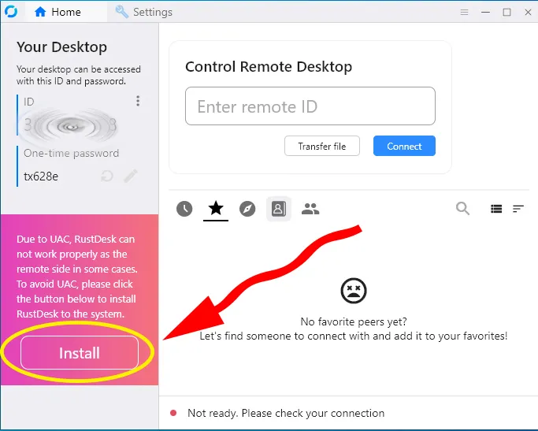

پس از دانلود نرم افزار RustDesk، روی فایل اجرایی کلیک کنید و مطابق شکل زیر روی گزینه Install کلیک نمایید:
پس از شروع پروسه نصب:
C:\Program Files\RustDesk)در پنجره هشدار امنیتی روی دکمه OK کلیک کنید:
پس از تکمیل نصب:
در بخش Network:
rustdesk.irrustdesk.irاکنون RustDesk شما آماده استفاده است. میتوانید: